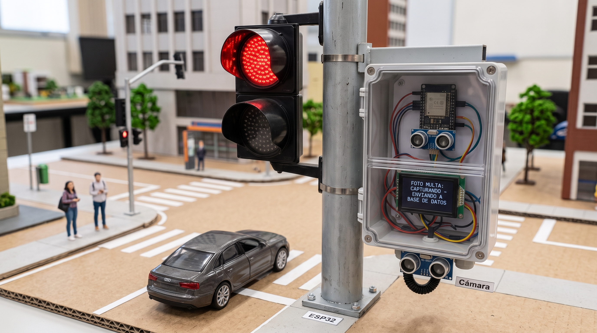
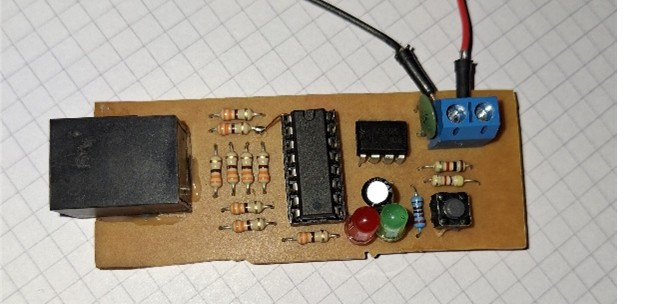
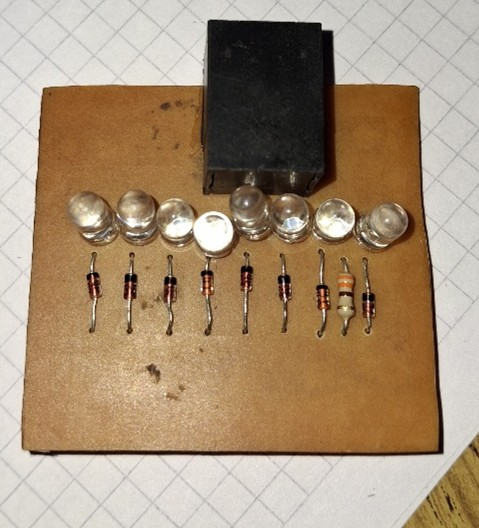
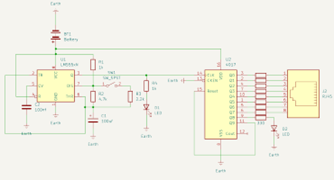
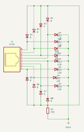

Final-year student at Instituto Madero, specialized in Telecommunications. Passionate about automotive electronics, hardware design, and integrating software.
Get in Touch— Who I am —
I am an 18-year-old electronics student in my final year at Instituto Madero, specializing in telecommunications. From a young age, I have been fascinated by how things work, which led me to dive deep into automotive electronics and embedded systems.
I consider myself a highly responsible and organized individual — I firmly believe that order and meticulous planning are the foundation of efficiency and success in any project. I am a proactive problem-solver, always eager to learn new technologies, and I thrive in team environments. My greatest satisfaction comes from building tangible, functional hardware that integrates seamlessly with software.
Whether it's designing a PCB in KiCad, troubleshooting a circuit with a multimeter, or programming an ESP32, I bring dedication and a methodical approach to every challenge.
— What I master —
Intermediate / Advanced
Intermediate
Intermediate
Basic / Intermediate
Basic
Advanced hands-on
— What I offer —
From simulation (Proteus) to schematic design, creating reliable analog and digital circuits.
Full PCB layout in KiCad, including etching, soldering, and hands-on troubleshooting.
Programming microcontrollers (ESP32) and integrating sensors, cameras, and wireless communication.
— My recent work —

This project simulates an intelligent traffic enforcement system. An ESP32 controls a traffic light and an ultrasonic sensor. When the light turns red and a vehicle passes, it triggers an ESP32-CAM module via WiFi to capture a photo. The image is sent with a timestamp to a MongoDB database on a PC. A Flask server serves a web interface that uses OCR to extract the license plate and automatically generates a digital traffic fine.

A professional-grade tool designed to test continuity and pin-to-pin wiring order in UTP/network cables. Based on a classic NE555 astable oscillator generating a clock for a CD4017 decade counter, it sequentially tests all 8 wires. This photo shows the assembled board after soldering and troubleshooting. I identified and fixed open-circuit traces using a multimeter and solder bridges, demonstrating strong hands-on skills.

Complete workflow from schematic capture to PCB routing in KiCad for the LAN Tester project. Includes the transfer process using the heat transfer (iron) method, chemical etching in ferric chloride, and manual assembly. Faced and overcame challenges such as broken traces, using solder bridges and multimeter continuity tests to ensure full functionality.

Schematic design and simulation of the LAN Tester circuit in Proteus. The NE555 is configured as an astable oscillator generating a clock signal for the CD4017 decade counter. The frequency was calculated as 1.384 Hz using the formula F = 1.44 / ((R1 + 2R2)*C1). The simulation verified the sequential testing of all 8 wires.

Detailed schematic view of the LAN Tester in KiCad, showing the connections between the CD4017 outputs, the RJ45 connectors, and the 8 test LEDs. This schematic was used to generate the PCB layout and manufacturing files.
— Let's connect —
📩 Feel free to reach out for collaborations, project ideas, or just a technical chat!
sperezpradi@gmail.com